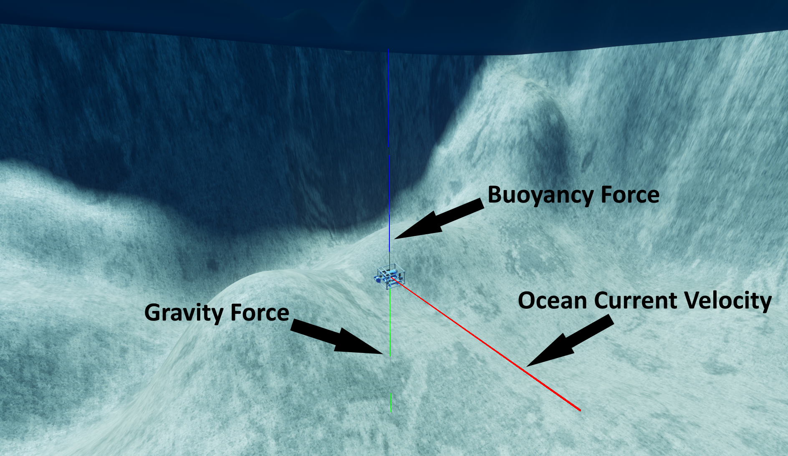
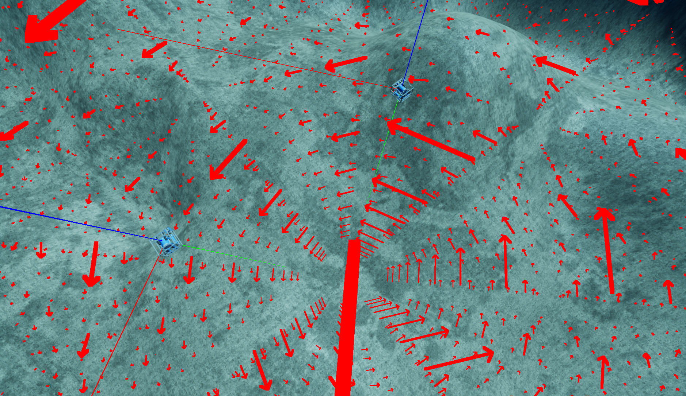

Ocean Currents Controller
HoloOcean worlds can optionally simulate the dynamic effects of real ocean currents on your vehicle. This allows for the testing of more rigorous vehicle navigation or the difficulties that currents could pose to completing a vehicle mission.
Note
As of now, ocean currents do not work when using Fossen Dynamics for the vehicle controllers.
Configuring Scenario for Currents
Currents are defined as velocity vectors that are applied to the vehicle.
Note
This ocean currents vector is in the global frame.
Currents are always active, and naturally default to a velocity of [0, 0, 0] for everywhere in the world. There are optional debugging lines that can be turned on within the config by adding the following to the outermost layer:
"current": {
"vehicle_debugging": True
}
Turning on debug lines will generate three debugging lines per vehicle, indicating gravity force, buoyancy force, and ocean current velocity, all at the center of mass of the vehicle. The image below demonstrates this:
Change Current
To change the current during a live game, call set_ocean_currents() from your environment object and pass in the name of the vehicle that you would like to apply the new current vector to, along with that vector.
env.set_ocean_current("auv0", [1.5, 1, 0])
Custom Currents
HoloOcean provides a lot of freedom for creating custom ocean current dynamics in your simulation. If you wish to simulate location-dependent currents, it can be accomplished by creating a simple vector field function that takes in location and outputs a vector at that location. Then, by adding a location sensor to each vehicle you wish to apply the currents to, you can pull vehicle location at each tick, pass that into your vector field function to get current velocity at each location, and apply that to each vehicle individually. Here’s a short example of what that might look like (This assumes that “env” is your environment object variable):
def vector_field(location):
x, y, z = location
return [-x, -y, -z]
vehicles = ["auv0", "auv1", "auv2"]
while True:
tick_info = env.tick()
for vehicle in vehicles:
location = tick_info[vehicle]["LocationSensor"]
ocean_current_velocity = vector_field(location)
env.set_ocean_currents(vehicle, ocean_current_velocity)
If you wish to implement time dependent currents, you can create a new vector field function that takes in time as a parameter and outputs a vector for ocean currents at that time. You can also try adding location to the mix as well to simulate time and location dependency. Then, loop through the different vehicles and apply that current to each. Here’s an example:
def vector_field(time):
x = np.sin(time)
y = np.cos(time)
z = -.5
return [x, y, z]
time = 0
vehicles = ["auv0", "auv1", "auv2"]
while True:
tick_info = env.tick()
ocean_current_velocity = vector_field(time)
time += 1
for vehicle in vehicles:
env.set_ocean_currents(vehicle, ocean_current_velocity)
Drawing Vector Fields
There is an additional environment command called draw_debug_vector_field that allows you to render a 3D matrix of
vectors to get a better feel for your current field. Just make sure that your function takes in a location vector
and outputs a current velocity vector. Required parameters for this command are a vector field function to simulate
the current flow and a location vector around which to generate the vector field. Other optional parameters include
the dimensions of the vector field generated, the spacing between the vectors, vector thickness, arrow size scale,
and the lifetime of the vector field generated. For more info on all function parameters, see the API documentation:
draw_debug_vector_field.
If you want to see an example of this in action, take a look at the ocean-currents example.